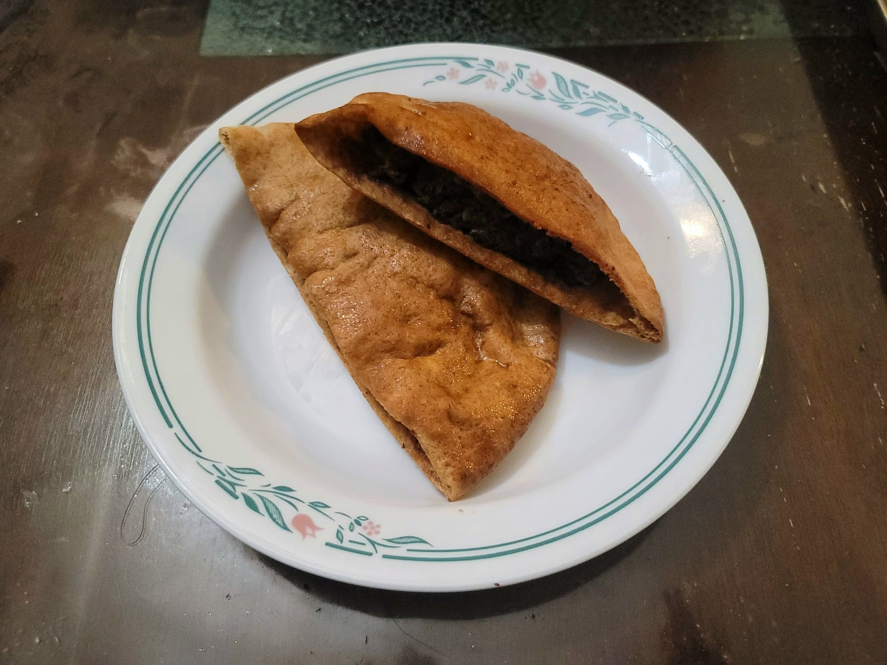

Hawawshi

Ingredients:
Spice Mix:
- 1 tsp Coriander
- 1 tsp Allspice
- 1 tsp Paprika
- 1 tsp Black pepper
- 3/4 tsp Cardamom
- 1/2 tsp Cumin
- 1/4 tsp Cinnamon
Hawawshi:
- 2 lb Ground beef, 90/10
- 6 Baladi loaves or Whole wheat pita loaves, halved
- 1 Onion, quartered
- 2 cloves Garlic
- 1 Green bell pepper, cored, chopped
- 1 Jalapeño, seeded, halved
- 15 g Parsley
- 3 tbsp Tomato paste
- 2 tsp salt, or to taste
- Olive oil, as needed
Instructions:
- Preheat an oven to 400 degrees Fahrenheit. In a small bowl, combine all the spices.
- Place the onion, garlic, bell pepper, jalapeño, and parsley into a food processor and pulse until finely minced. Then transfer the mixture to a sieve and push down to remove any excess moisture.
- Place the mixture into a large mixing bowl with the ground beef, tomato paste, salt, and the spice mixture. Mix to combine well.
- Brush a large sheet pan with olive oil. Stuff each baladi pocket with about 1/3 cup of the meat mixture and spread evenly. Place onto the sheet pan and then brush each baladi pocket with more olive oil.
- Place into the oven and bake for about 15 minutes. Then flip each hawawshi and bake for another 5-10 minutes, or until fully cooked.
- Remove from the oven and serve immediately.